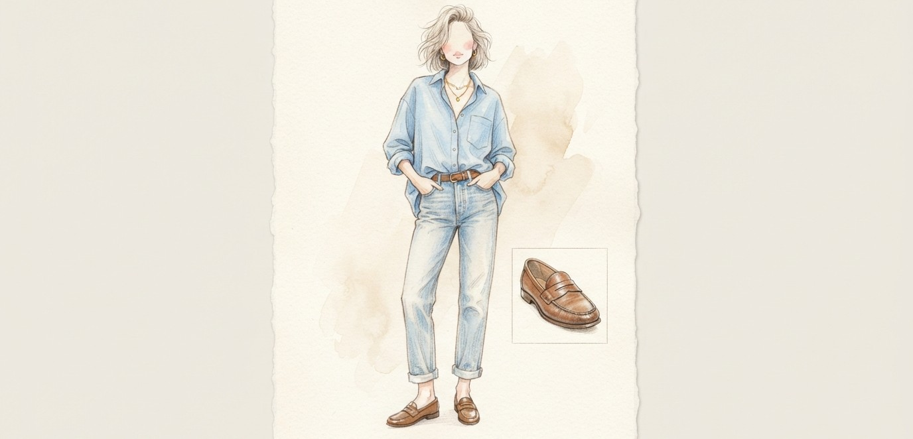
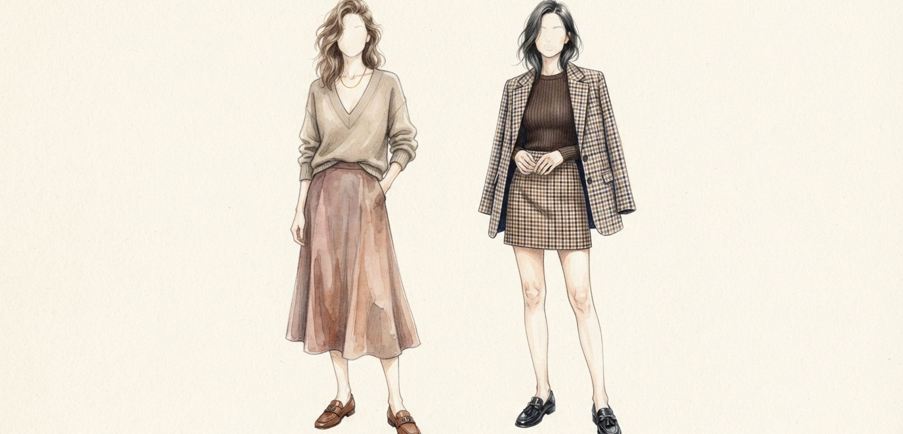
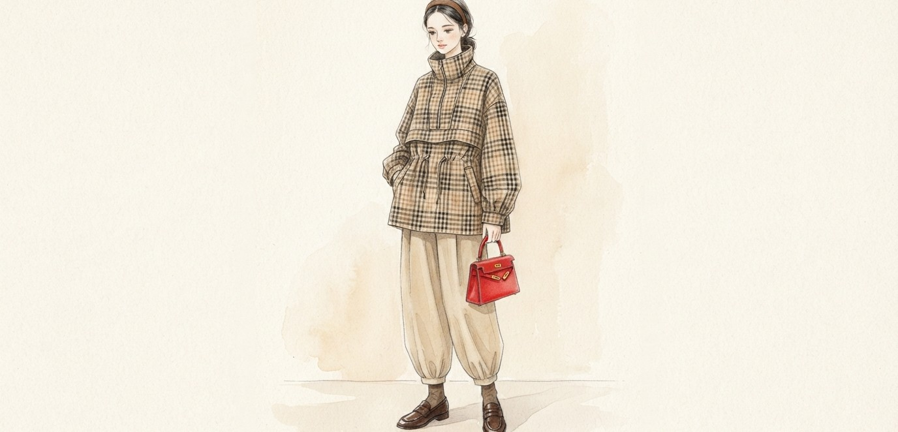
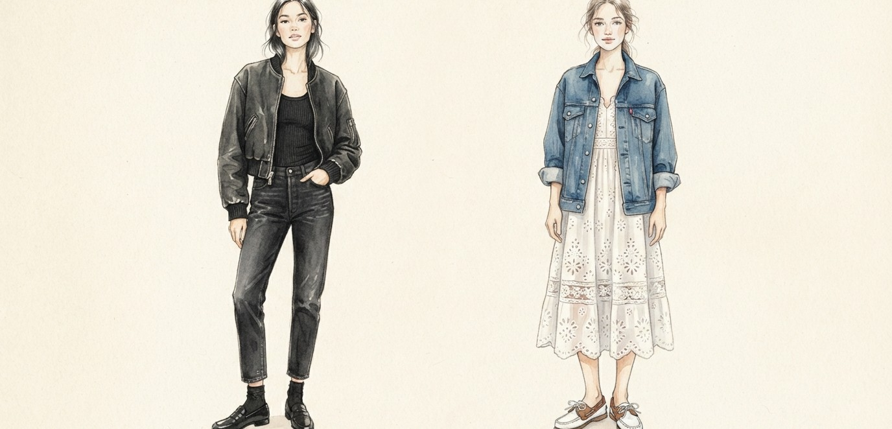

가을에 손이 자주 갈 신발
결국 로퍼
STYLE 01 · SHIRT & DENIM
셔츠에 연청 데님
로퍼로 힘 빼기

컬러 셔츠 + 연청 데님 + 레더 로퍼
컬러감 있는 오버사이즈 셔츠에 연청 데님, 심플한 레더 로퍼. 나머지는 최대한 간결하게 정리하면 산뜻한 캐주얼 룩이 돼요.
* 출처: 엘르 코리아
STYLE 02 · SKIRT
스커트에 따라
분위기가 달라져요

성숙하게 · 미디스커트쿨하게 · 미니스커트
- 1
브이넥 니트 + 미디스커트에 장식 있는 로퍼. 목걸이는 간결하게 하나만.
- 2
붙는 상의 + 미니스커트에 체크 재킷을 걸치면 가을 분위기가 살아나요.
* 출처: 엘르 코리아
STYLE 03 · CHECK ANORAK
스포티한 아노락에도
의외로 찰떡

체크 아노락 + 벌룬 팬츠 + 레드 백
브라운·베이지로 컬러를 맞추면 단정한 데일리 룩. 벌룬 팬츠와 헤어밴드를 더하고, 선명한 레드 백 하나로 생기를 줘요.
* 출처: 엘르 코리아
STYLE 04 · ALL BLACK & BOAT SHOES
올블랙으로 시크하게
보트 슈즈로 산뜻하게

올블랙 + 블랙 로퍼화이트 원피스 + 보트 슈즈
- 1
크롭 봄버 재킷에 워싱 데님, 이너·양말까지 블랙으로 통일하고 장식 없는 블랙 로퍼.
- 2
레이스 디테일 화이트 원피스에 오버사이즈 데님 재킷, 발끝엔 보트 슈즈.
* 출처: 엘르 코리아
PERSONAL COLOR TIP
내 톤엔 어떤
로퍼 컬러?
쿨톤차갑고 선명한 색
블랙
버건디
차콜
웜톤따뜻하고 부드러운 색
초콜릿 브라운
카멜
탄
TIP얼굴에서 먼 신발도 가방·벨트와 색을 맞추면 톤이 정돈돼 보여요.
* 컬러칩은 이해를 돕기 위한 예시예요
BEAUTY letter
P.S.
에디터의 한 줄 팁
로퍼를 신는 날엔 청바지 밑단을 발목이 살짝 보이게 접어 보세요.
훨씬 가볍고 가을다워 보여요.
다음 레터에서
만나요
저장해두고 쇼핑할 때 꺼내보세요
@from.beautyletter 팔로우
참고: 엘르 코리아 · 컬러칩은 예시예요